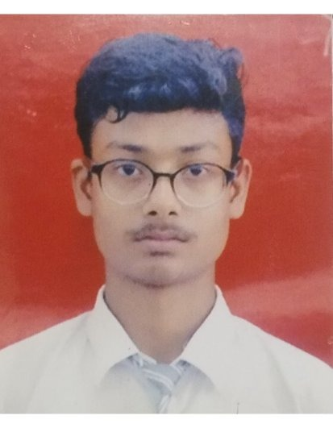

ANSHURAJ SAH

Creative strategist, AI-native producer, and digital media coordinator with hands-on experience in project production, motion design, and social media storytelling. Skilled at leveraging generative AI workflows, researching internet trends, scripting engaging hooks, and coordinating fast-paced production—ready to support BTS shoots, creative brainstorming, and multi-platform workflows for Sarthak Goswami's team.
// 01 CREATIVE & PRODUCTION EXPERIENCE
AGENCY & INDEPENDENT- Manage end-to-end digital media production for brands, overseeing ideation, AI-assisted scripting, motion design, and final social media delivery.
- Develop dynamic visual graphics, kinetic typography, and narrative pacing tailored to retain audience attention across YouTube and short-form vertical feeds.
- Coordinate multi-project deadlines in fast-paced environments, translating raw assets and creative briefs into polished, platform-ready deliverables.
- Conceptualize, script, record, and produce original long-form and short-form media, managing the complete production pipeline independently.
- Conduct AI-accelerated trend and topic research to identify high-performing formats, viral hooks, and audience engagement patterns.
- Craft custom thumbnails, visual storytelling elements, and audio pacing to improve click-through rates and viewer retention.
- Built and managed a niche gaming community page, coordinating fast-turnaround Reels, memes, and trend-driven posts tailored to audience culture.
- Monitored platform analytics, audio trends, and creator formats to optimize posting schedules and maximize organic reach.
// 02 SELECTED CREATIVE PROJECTS & CAPABILITIES
SHOWCASE- Produced high-retention Reels and explainer pieces combining visual layering, custom motion callouts, sound design, and clean narrative pacing.
- Experienced in turning complex or informational topics into accessible, entertaining visual stories suited for news-and-culture audiences.
// 03 CORE SKILLS & PRODUCTION ARSENAL
PILLARSGenerative AI Workflows, Prompt Engineering, AI-Assisted Research & Scripting, AI Visual & Audio Generation, Workflow Automation.
Post-Production, Motion Graphics, Kinetic Typography, Sound Design, Color Grading, Short-Form & Long-Form Pacing.
Trend & Topic Research, Script & Hook Ideation, Social Media Coordination (YouTube, Instagram), Thumbnail Design.
BTS Shoot Assistance, Creative Brainstorming, Asset & Footage Organization, Fast-Turnaround Delivery.